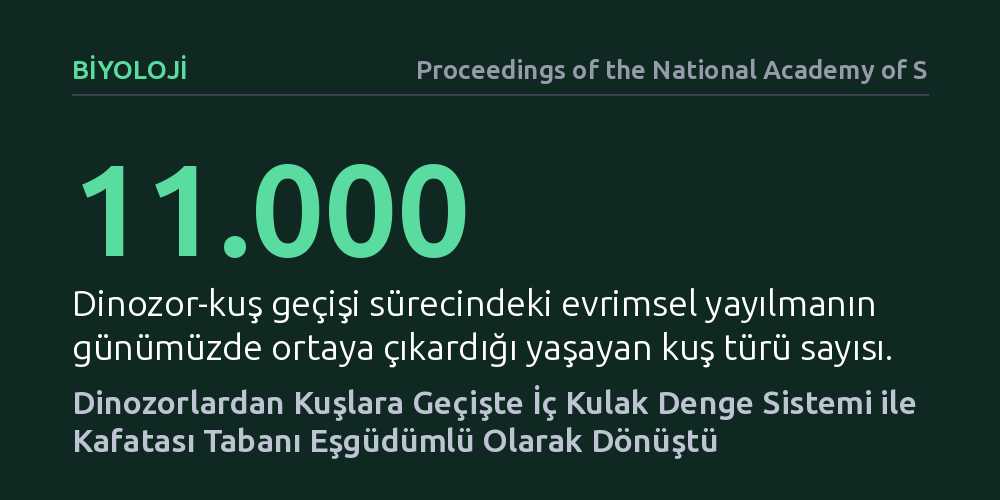

BIYOLOJI · Proceedings of the National Academy of Sciences · 2026-10-24
Araştırmacılar, dinozorların kuşlara evrilirken uçuş kabiliyetini nasıl kazandığını anlamak için iç kulaktaki denge organı ile kafatasının arka kısmını inceledi. Bulgular, iç kulak labirentinin ve kafatası tabanının birbirinden bağımsız değil, değişen kafa duruşuna uyum sağlayacak şekilde eşgüdümlü dönüştüğünü gösterdi.
Uçuş gibi karmaşık bir kabiliyetin kazanılmasında denge duyusunun iskelet anatomisinden bağımsız değil, kafatasının boyunla birleştiği bölgeyle sıkı bir uyum içinde evrildiğini gösteriyor.

Kuşların iki ayak üzerinde yürüyen etçil dinozorlardan türediği artık evrimsel biyolojinin en sağlam bulgularından biridir. Ancak yerde koşan bir canlının havada kanat çırparak üç boyutlu bir ortamda yön bulabilmesi, yalnızca tüy ve kanatların gelişmesiyle açıklanamaz. Uçuş, beynin gövdeye ve yerçekimine göre başın nerede durduğunu anlık olarak bilmesini, yani kusursuz çalışan bir denge mekanizmasını zorunlu kılar.
Başın duruşu ve hareket serbestliği, omurganın kafatasına bağlandığı art kafa bölgesiyle doğrudan ilişkilidir. Aynı zamanda başın yaptığı dönüşleri ve ani yön değişimlerini algılayan organ, iç kulakta yer alan yarım daire kanallarıdır. Araştırmacılar, uçuşa giden yolda denge organının tek başına mı değiştiğini, yoksa kafatasının boyunla birleştiği eklem bölgesiyle senkronize bir dönüşüm mü geçirdiğini belirlemeyi amaçladı.
Araştırma ekibi bu soruyu yanıtlamak için teropod dinozorlardan modern kuşlara uzanan geniş bir evrimsel soy hattını mercek altına aldı. Fosil dinozor kafatasları ile günümüzde yaşayan kuşların kafatası örnekleri yüksek çözünürlüklü bilgisayarlı tomografiyle üç boyutlu olarak tarandı. Bu taramalar sayesinde kemiğin içinde korunan iç kulak boşlukları ve kafa tabanının geometrik yapısı hassas biçimde modellendi.
Elde edilen anatomik ölçümler, rastgele değişimleri elemek amacıyla filogenetik karşılaştırmalı yöntemlerle incelendi. Araştırmacılar, türler arasındaki akrabalık ilişkilerini hesaba katan çok değişkenli evrimsel modeller kullanarak, iç kulaktaki yarım daire kanallarının biçimsel değişimi ile kafatası tabanının yönelimindeki farklılaşmaları istatistiksel sınamaya tabi tuttu.
Analiz sonuçları, iç kulak labirenti ile art kafa bölgesinin birbirinden bağımsız değil, sıkı bir eşgüdüm içinde evrildiğini gösterdi. Dinozorlardan erken kuşlara doğru gidildikçe kafatasının omurgaya bağlandığı delik daha aşağıya ve öne yönelirken, iç kulaktaki denge kanalları da bu yeni kafa duruşuna ve görme açısına uyum sağlayacak şekilde mekânsal olarak yeniden konumlandı.
Bu iki anatomik bölge arasındaki uyumlu dönüşüm, aktif uçuşun ortaya çıkış sürecinde başın aerodinamik dengesiyle örtüşmektedir. Kafatası tabanının bükülmesi ve beynin büyümesiyle birlikte iç kulak, kafanın omurgayla kurduğu mekanik bağla tam bir morfolojik entegrasyon sergileyerek değişmiştir.
Elde edilen bulgular, aktif uçuş gibi köklü bir hareket kabiliyetinin tek bir yapının tekil değişimiyle ortaya çıkmadığını gösteriyor. Canlının havada dengesini kaybetmeden süzülebilmesi, duyusal girdi sağlayan iç kulak ile mekanik destek sağlayan iskelet yapısının birlikte kusursuz bir uyum geliştirmesini gerektirmiştir.
Bu durum, evrimsel biyolojide organların ve iskelet elemanlarının modüler ama birbirine kenetli şekilde dönüştüğünü kanıtlar niteliktedir. Omurgalıların karadan havaya geçişi, duyusal donanım ile kafatası mimarisinin eşzamanlı bir yeniden örgütlenmesi sayesinde gerçekleşmiştir.